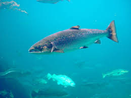

El salmón es un pescado graso de agua fría, reconocido por su alto contenido en omega-3, proteínas, fósforo y selenio. Se cocina fácilmente a la plancha, al horno, al vapor o ahumado, siendo común acompañarlo con espárragos, patatas o salsas de limón y eneldo. Es un alimento versátil en recetas saludables.